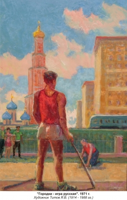

Народная игра
Какие именно слои российского общества играли в городки? В немецком альбоме 1805 г. и парижском альбоме 1812 г. подчеркивается, что это игра русского простонародья, людей «из низших классов», — «кучеров и домашней прислуги». Можно подумать, дворянские дети и вообще люди из высших слоев общества пренебрегали этой народной забавой. В небольшой книжке «Дети с их играми и забавами», изданной в Санкт-Петербурге в 1852 г., отпрыскам благородных фамилий рекомендуется играть в кегли, — в игру, заимствованную из Европы. Такие русские игры как бабки, лапта и городки в этой книжке даже не упоминаются. Другая книжка, предназначенная для благородного сословия, — «Забавник гостиных и детских» (СПб., 1864), — также обходит молчанием чисто русские домашние и дворовые игры, и отдает предпочтение салонным развлечениям, так же заимствованным из Европы. Про-западническое поветрие в русском обществе XIX века (продолжающееся, впрочем, и по сей день) отражалось и на выборе детских игр. Довольно продолжительное время игра в городки была не в чести у дворянского сословия России. На гравюрах начала XIX в., посвященных игре в городки, мы находим фигуры дворян в характерных одеждах и головных уборах, — офицеров в треуголках или господ в цилиндрах, — но это не игроки, а только зрители, стоящие в стороне и наблюдающие за игрой простонародья. Сами игроки подчеркнуто изображены мужиками и парнями из «низшего сословия». Их фигуры живописны и колоритны, ими любуются зрители, и сам художник старательно рисует их, но, тем не менее, они — крестьяне, «кучеры и домашняя прислуга». И все же мы располагаем свидетельствами, что уже во второй половине XIX в. городками увлекаются дворяне, служившие в армии. Трудно сказать, насколько точен Л. Н. Толстой, описывая в романе «Война и мир» развлечения русских офицеров 1805–1812 гг.: «Офицеры так же, как и обыкновенно, жили по-двое, по-трое, в раскрытых полуразоренных домах. Старшие заботились о приобретении соломы и картофеля, вообще о средствах пропитания людей, младшие занимались, как всегда, кто картами (денег было много, хотя провианта и не было), кто невинными играми — в свайку и городки» (Т. II, Ч. 2, гл. 15). Во всяком случае, сам Лев Николаевич, будучи на армейской службе, в городки играл. В его «Кавказских воспоминаниях» (1853–1856 гг.) читаем: «Наша палатка стояла недалеко от орудий, на сухом и высоком месте, с которого вид был особенно обширен. Подле палатки, около самой батареи, на расчищенной площадке была устроена нами игра в городки или чушки. Услужливые солдатики тут же приделали для нас плетеные лавочки и столик. По причине всех этих удобств артиллерийские офицеры, наши товарищи и несколько пехотных любили по вечерам собираться в нашей батарее и называли это место клубом». То, что офицеры играли именно в ту игру, которой развлекалось простонародье в начале века, следует далее из ее описания: «Вечер был славный, лучшие игроки собрались, и мы играли в городки. Я, прапорщик Д. и поручик О. проиграли сряду две партии и к общему удовольствию и смеху зрителей, — офицеров, солдат и денщиков, глядевших на нас из своих палаток, — провезли два раза на своих спинах выигравшую партию от одного кона до другого». Совершенно, как в лейпцигском и парижском описаниях, проигравшие офицеры, включая Льва Николаевича, возят на спинах своих победителей, а «кон» — это место бросков битами. Свидетельство Л. Н. Толстого, что игра в городки распространилась в армии, особенно среди офицерства, подтверждает другой военный автор, генерал А. А. Игнатьев (1877–1954 гг.), отметивший в автобиографическом сочинении «50 лет в строю», что вовремя русско-японской войны 1904–05 гг. армейские чины играли в городки «посреди широчайших и чисто выметенных улиц» Мукдена (Кн. 2, гл. 9). К сожалению, это краткое упоминание не позволяет судить о тогдашних правилах игры, которые могли измениться с начала XIX в. Не ясно, в частности, катались ли победители игры на спинах побежденных, как это было прежде. В XX веке такой обычай никем не отмечается. Нет такого обычая и сейчас. Он существовал, но исчез где-то в конце XIX или в начале XX столетия.

Шумные состязания городошников происходили ежегодно на Нижегородской ярмарке. Сюда собирались показать свое мастерство лучшие городошники России. Говорят, в то время, когда эти удальцы играли в городки, оживленные торги временно приостанавливались, и весь люд — и продавцы, и покупатели стекалась на центральную ярмарочную площадь поглядеть на любимую забаву . «Попы», «рюхи», «чушки», «сракли», «стропила», «городки»… «Имя Городки, данное в этой игре, — объясняется в лейпцигском альбоме 1805 г., — происходит от одного селения, называемого Городок. Да и деревянные бруски, поставленные одни на другие, напоминают город, осажденный врагами» . Несомненно, автор описания прав во втором случае. По мнению филологов, городками игра была названа именно из-за применяемых в ней кругов или четырехугольников, которые и в других русских играх также называются городами или городками. В XIX в. в Астраханской губернии эта игра называлась «стропилами»: в начерченный на земле четырехугольник ставили три деревяшки, соединенные вершинами вместе, как стропила крыши . То, что название игры связано с представлением о штурме крепости или города, показывают употреблявшиеся в ней термины и выражения. Если от удара биты первая чурка вылетала за пределы круга или четырехугольника, то это называлось «розжигом», «город» считался «зажженным», а те игроки, которые первыми начинали метать биту, назывались «зажигающими» . Распространившись по всем губерниям Российской империи, игра эта обрела в народе самые разные названия. В средней полосе России, в Омской и Тобольской губерниях ее называли «рюхами», «чухами» или «чушками», в Вятской губернии — «деревянными бабками», в Черниговской губернии — «кеглями» или «поросятами», в Херсонской губернии — «сраклями», в Кубанской области — «клетками» . Все же наиболее часто эту игру называли «городками» или «рюхами». Этимологию названия «городки» мы уже рассмотрели. Какова этимология названия «рюхи»? «Относительно названия этой игры рюхами, чухами и чушками, — пишет известный этнограф и педагог XIX в. Е. А. Покровский, — бытописатели высказывают ту мысль, что названия эти могли быть даны игре по некоторому сходству деревянных чурок, употребляемых в ней, с поросятами, называемыми в иных местах чушками. Кроме того в России часто кличут свиней: “чух, чух!” или “рюх, рюх!”, подражая тем хрюканью этих животных. Высказанное предположение тем более вероятно, что в некоторых местностях Черниговской губернии игра эта и до сих пор прямо называется “поросятами, а во время игры получают название поросят именно деревяшки, употребляемые в этой игре и разваленные известным образом» . Итак, «поросята» в «городе». Правда, поставленные определенным образом в виде той или иной фигуры, чурки-«поросята» приобретали иное значение, более соответствующее теме осажденного города. Обычно чурки изготавливались из какого-либо прочного дерева, например, липы или березы, длиной около четверти аршина, толщиной 1,5–2 вершка. В разных местностях в игре применялось различное количество чурок, от 8 до 50. Также различно, смотря по местности, было количество фигур, составленные этими чурками. В качестве наиболее распространенной Е. А. Покровский рассматривает фигуру, состоящую из 4–5 чурок. Название этой фигуры не приводится, но своим внешним видом она похожа на сегодняшнюю фигуру «пушка». «В Вятской, Пермской, Симбирской и некоторых других губерниях, — читаем в книге Е. А. Покровского, — чушки укладываются большей частью таким образом: посредине передней черты “города” и вдоль нее кладется плашмя одна чушка; на нее кладут еще две следующие лишь одним концом, а другим они упираются в землю. В ложбину между двумя этими чушками кладется четвертая так, что нижним концом она упирается тоже в землю, вследствие чего вверху нее, на ниже лежащих чушках остается свободное пространство, на которое становится “чиж” или “поп”, т. е. небольшая чурочка, конусообразно обтесанная и сделанная из того же самого дерева, из которого приготовляют чушки, длинною около 2–3 вершков, толщиной при основании, как и чурки, 1–2 вершка. В некоторых местностях той же Вятской губернии, однако, нередко заменяют этих “чижей” или “попов” прямо пятой чуркой. При этом способе устройства “городов” в каждом из них укладываются от 4 до 5 чушек; в первом случае с “чижами”, во втором — без чижей» . Несмотря на некоторые отличия от нынешней фигуры «пушка», описанная фигура не только напоминает «пушку», но и состоит из того же количества чурок — из пяти. Это-то фигура, прообраз современной «пушки», и есть самая древняя из известных нам городошных фигур. Бытовавший в XIX в. в некоторых местностях «чиж» или «поп» остался достоянием того века, — в XX веке такая необычная чурочка уже не встречается. Однако чурочка играла немаловажную роль. В некоторых местностях «город» считался «зажженным», когда удавалось выбить за черту именно этого «попа» . Видимо, именно эта чурочка упоминается в романе А. М. Горького «Жизни Клима Самгина» (Ч. I, гл. 4), когда говорится об игре в городки деревенских мальчишек. Добавим, что сам Горький с детства с удовольствием играл в городки, о чем и написал в «Автобиографических рассказах» . Е. А. Покровский описывает и другие городошные фигуры, применявшиеся в той или иной местности, но за краткостью описания и при отсутствии соответствующих рисунков в его книге их очень трудно сопоставить с нынешними городошными фигурами (хотя желающие, наверное, смогут это сделать, внимательно изучая текст уважаемого этнографа). Не помогут в определении городошных фигур XIX века и упомянутые выше гравюры лейпцигского 1805 г. и парижского 1812 г. альбомов. Почти все внимание художники начала XIX века уделяли живописным позам игроков в городки. При этом сами художники не были городошниками, — поэтому детали игры, расстановка и расположение чурок интересовали их менее всего. На гравюрах XIX века мы видим неясные очертания стоящих и разбросанных чурок, иногда при отсутствии самих «городов», — начерченным на земле кругов или четырехугольников. Судить о городошных фигурах по этим гравюрам невозможно. Но эти фигуры несомненно были. Понятно, что с самого начала чурки в «городах» устанавливались не хаотично, но в некотором определенном порядке. На этот порядок прямо указывает лейпцигский автор 1805 г.: «…брусков обычно пять; но иногда бывает семь или девять, — причем одни поставлены на другие». Из этого явствует, что из чурок составлялись те или иные фигуры, по которым затем били палкой-битой. Фигуры начала XIX века нам не известны. Применительно к концу XIX века, благодаря Е. А. Покровскому, установлена фигура, состоящая из 4–5 чурок, напоминающая нынешнюю фигуру «пушка». Палки, которыми метали в «город», назывались битами, битками, креглями, сраклями.
Наказание проигравших в виде езды на них было одновременно продолжением игры. «После игры побежденные обыкновенно возят своих победителей на спинах от города до города установленное число раз, — сообщает Е. А. Покровский. — Или же, прежде чем возить победителей на спинах, побежденные устанавливают обычным образом чушки в обоих городах, затем принимают на спины своих победителей и везут их до следующего города. Здесь победители слезают с них и кидают палками в отдаленный город» . В финской игре kuukka также не земле также чертятся два «города», на расстоянии 10 м один от другого. Участвуют в игре две команды игроков. Правда, «города» эти больше размерами и достигают площади 5х5 м. Изготавливаемые для игры из березы 40 чурок также называются «попами», но имеют в диаметре 7–8 см и высоту 10 см. Обычно они ставятся на передней линии каждого «города» в один ряд, на равном расстоянии друг от друга, по 20 штук с каждой стороны . Такая расстановка чурок напоминает русскую игру в бабки, хотя бабки обыкновенно ставились в два ряда. У ингерманландцев «попы» принято окрашивать в яркие цвета. Игроки бросают по четыре «maila»–биты длиной от 85 см и диаметром не более 8 см, изготовленные из березы или ели. Вес биты от 2 кг для женщин и детей и от 3,5 кг для мужчин. Игроки, делая по 4 броска, должны за меньшее количество бросков выбить «попы» за городскую черту. Первый бросок делается с дальней линии, если хоть один «поп» вылетел из «города», игрок имеет право войти и производить броски из черты «города». «Maila», не вылетевшая после броска из «города», остается в нем, мешая следующему броску, поэтому удары должны быть очень сильными и точными. «Поп», упавший после удара и оставшийся в «городе» на земле, называется «akka» – хозяйка. «Поп», выкатившейся из «города» вперед называется «гость», не убирается и его надо выбить следующими ударами. «Поп», упавший на городской черте, называется «ukko» – дед, его после второго броска переворачивают, ставят «на попа» и выбивают. Совершенно так же, как в русских городках, проигравшие игроки обязаны катать на своих спинах победителей вокруг всей игровой площадки три раза.